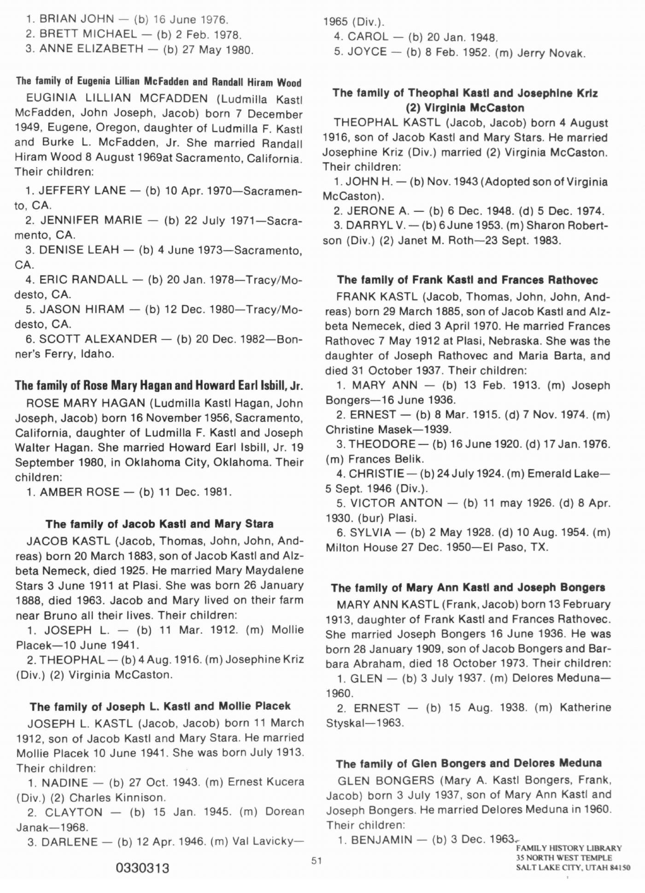

The book · The Family of Jacob Kastl
Page 51 The family of Eugenia Lillian McFadden and Randall Hiram Wood


Transcription
- BRIAN JOHN — (b) 16 June 1976.
- BRETT MICHAEL — (b) 2 Feb. 1978.
- ANNE ELIZABETH — (b) 27 May 1980.
The family of Eugenia Lillian McFadden and Randall Hiram Wood
EUGINIA LILLIAN MCFADDEN (Ludmilla Kastl McFadden, John Joseph, Jacob) born 7 December 1949, Eugene, Oregon, daughter of Ludmilla F. Kastl and Burke L. McFadden, Jr. She married Randall Hiram Wood 8 August 1969at Sacramento, California. Their children:
- JEFFERY LANE — (b) 10 Apr. 1970—Sacramento, CA.
- JENNIFER MARIE — (b) 22 July 1971—Sacramento, CA.
- DENISE LEAH — (b) 4 June 1973—Sacramento, CA.
- ERIC RANDALL — (b) 20 Jan. 1978—Tracy/Modesto, CA.
- JASON HIRAM — (b) 12 Dec. 1980—Tracy/Modesto, CA.
- SCOTT ALEXANDER — (b) 20 Dec. 1982—Bonner's Ferry, Idaho.
The family of Rose Mary Hagan and Howard Earl Isbill, Jr.
ROSE MARY HAGAN (Ludmilla Kastl Hagan, John Joseph, Jacob) born 16 November 1956, Sacramento, California, daughter of Ludmilla F. Kastl and Joseph Walter Hagan. She married Howard Earl Isbill, Jr. 19 September 1980, in Oklahoma City, Oklahoma. Their children:
- AMBER ROSE — (b) 11 Dec. 1981.
The family of Jacob Kastl and Mary Stara
JACOB KASTL (Jacob, Thomas, John, John, Andreas) born 20 March 1883, son of Jacob Kastl and Alzbeta Nemeck, died 1925. He married Mary Maydalene Stars 3 June 1911 at Plasi. She was born 26 January 1888, died 1963. Jacob and Mary lived on their farm near Bruno all their lives. Their children:
- JOSEPH L. — (b) 11 Mar. 1912. (m) Mollie Placek—10 June 1941.
- THEOPHAL — (b) 4 Aug. 1916. (m) Josephine Kriz (Div.) (2) Virginia McCaston.
The family of Joseph L. Kastl and Mollie Placek
JOSEPH L. KASTL (Jacob, Jacob) born 11 March 1912, son of Jacob Kastl and Mary Stara. He married Mollie Placek 10 June 1941. She was born July 1913. Their children:
- NADINE — (b) 27 Oct. 1943. (m) Ernest Kucera (Div.) (2) Charles Kinnison.
- CLAYTON — (b) 15 Jan. 1945. (m) Dorean Janak—1968.
- DARLENE — (b) 12 Apr. 1946. (m) Val Lavicky—1965 (Div.).
- CAROL — (b) 20 Jan. 1948.
- JOYCE — (b) 8 Feb. 1952. (m) Jerry Novak.
The family of Theophal Kastl and Josephine Kriz (2) Virginia McCaston
THEOPHAL KASTL (Jacob, Jacob) born 4 August 1916, son of Jacob Kastl and Mary Stars. He married Josephine Kriz (Div.) married (2) Virginia McCaston. Their children:
- JOHN H. — (b) Nov. 1943 (Adopted son of Virginia McCaston).
- JERONE A. — (b) 6 Dec. 1948. (d) 5 Dec. 1974.
- DARRYL V. — (b) 6 June 1953. (m) Sharon Robertson (Div.) (2) Janet M. Roth—23 Sept. 1983.
The family of Frank Kastl and Frances Rathovec
FRANK KASTL (Jacob, Thomas, John, John, Andreas) born 29 March 1885, son of Jacob Kastl and Alzbeta Nemecek, died 3 April 1970. He married Frances Rathovec 7 May 1912 at Plasi, Nebraska. She was the daughter of Joseph Rathovec and Maria Barta, and died 31 October 1937. Their children:
- MARY ANN — (b) 13 Feb. 1913. (m) Joseph Bongers—16 June 1936.
- ERNEST — (b) 8 Mar. 1915. (d) 7 Nov. 1974. (m) Christine Masek—1939.
- THEODORE — (b) 16 June 1920. (d) 17 Jan. 1976. (m) Frances Belik.
- CHRISTIE — (b) 24 July 1924. (m) Emerald Lake—5 Sept. 1946 (Div.).
- VICTOR ANTON — (b) 11 may 1926. (d) 8 Apr. 1930. (bur) Plasi.
- SYLVIA — (b) 2 May 1928. (d) 10 Aug. 1954. (m) Milton House 27 Dec. 1950—El Paso, TX.
The family of Mary Ann Kastl and Joseph Bongers
MARY ANN KASTL (Frank, Jacob) born 13 February 1913, daughter of Frank Kastl and Frances Rathovec. She married Joseph Bongers 16 June 1936. He was born 28 January 1909, son of Jacob Bongers and Barbara Abraham, died 18 October 1973. Their children:
- GLEN — (b) 3 July 1937. (m) Delores Meduna—1960.
- ERNEST — (b) 15 Aug. 1938. (m) Katherine Styskal—1963.
The family of Glen Bongers and Delores Meduna
GLEN BONGERS (Mary A. Kastl Bongers, Frank, Jacob) born 3 July 1937, son of Mary Ann Kastl and Joseph Bongers. He married Delores Meduna in 1960. Their children:
- BENJAMIN — (b) 3 Dec. 1963.
Transcriber’s notes
Page opens with the children of Janet Frances McFadden and Michael John Bollinger (heading on previous page). Item 3 DARLENE in the Joseph L. Kastl list runs from the foot of the left column to the top of the right column ('Val Lavicky—' / '1965 (Div.).'); joined into one item. Inconsistent spellings as printed: 'EUGINIA' vs heading 'Eugenia'; 'Mary Stara' (headings, Joseph L. entry) vs 'Mary Maydalene Stars' and 'Mary Stars'; 'Alzbeta Nemeck' (Jacob entry) vs 'Alzbeta Nemecek' (Frank entry); '1969at' with no space; '11 may 1926' lowercase. A stray mark follows 'BENJAMIN — (b) 3 Dec. 1963.'
Library stamps and handwriting (not part of the book)
- Number '0330313' printed/stamped at bottom left (likely microfilm/call number).
- Stamp at bottom right: 'FAMILY HISTORY LIBRARY 35 NORTH WEST TEMPLE SALT LAKE CITY, UTAH 84150'.